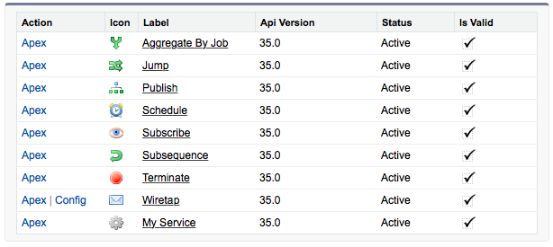

This tutorial demonstrates the discovery of new business logic. We will create a new service conforming to a standard shape so that it can be referenced by the Service Bus framework.
Expected duration: 10 minutes.
Before a Service can be referenced as a step in a sequence, it must first be discovered and registered by the Service Bus. The framework detects all Apex logic in the organization that conforms to a service specification. All valid services are registered and made available for potential selection by the system orchestrator when building sequences under the tab.
Open the developer console. Create a new Apex class and name it MyService. Paste in the following code and press Save.
global class MyService extends Abstract.Service {
global class Definition extends Abstract.Service.Definition {
String Tag = 'Services';
String Label = 'My Service';
String Description = 'My description.';
}
global override List<Map<String,Object>> execute(Map<String,Object> inputEvent) {
return new List<Map<String,Object>>();
}
}
